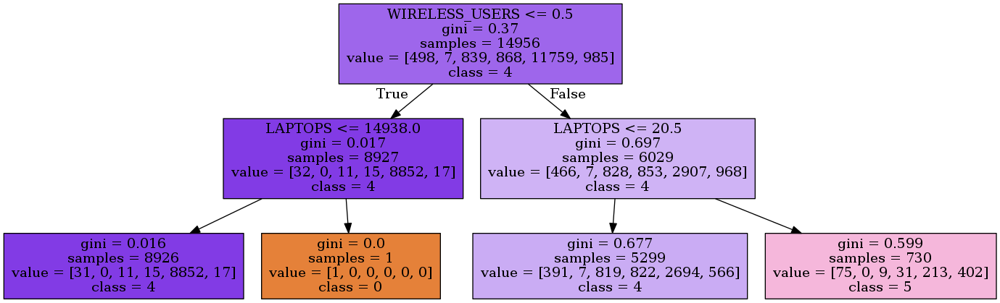

How to run?¶
Configuration file¶
The configuration file is a yaml file that is located in AberdeenProject/AberdeenProject and can be found under the name config.yml.
dirConfig:
workingDir: "/home/Linux/AberdeenProject"
dataDir: "/home/Linux/AberdeenProject/AberdeenProject/data"
pklDir: "/home/Linux/AberdeenProject/AberdeenProject/pickledData"
fileConfig:
pickledData_all: "dataframe_all.pkl"
pickledData_afterThFiltering: "dataframe_afterThFiltering.pkl"
features_afterThFiltering: "features_afterThFiltering.txt"
features_afterRFFiltering: "features_afterRFFiltering.txt"
The variables that should be defined in the configuration file are the following:
Files and directories¶
- dirConfig
workingDir which defines the path to the working directory
dataDir which defines the path to the data directory where the csv-files are stored
pklDir which defines the path to the directory where the pickled dataframe will be stored
- fileConfig
pickledData_all which defines the name of the complete pickled dataframe
pickledData_afterThFiltering which defines the name of the pickled dataframe after the threshold filtering
features_afterThFiltering which defines the name of the text file where the features extracted after the threshold filtering are stored
features_afterRFFiltering which defines the name of the text file where the features extracted after the Random Forest are stored
Dataframe configuration¶
- dataframeConfig
joinBasedOn which defines the column name based on which the csv-files will concatenated in order to generate the full dataframe
- missingConfig
threshold which defines the percentage of missing values based on which the decision whether a column should be dropped will be made
- randomForestConfig
ratio which which defines the percentage of the most important features which should be extracted after the Random Forest classifier
Features and labels¶
The user should also define a single label that will be predicted using a set of features which also should be defined in the configuration file. For each defined feature and label, the user should specify the imputation and the preprocessing strategies as illustrated in the example below
features:
# Number of employees
EMPLE:
missing: "mean"
preprocessing: None
# Number of employees that travel internationally
MOBILE_INTL:
missing: "most_frequent"
preprocessing: "one_hot"
labels:
# Laptop purchase likelihood score
LAPTOP_PLS:
missing: "most_frequent"
preprocessing: None
The following startegies are currently supported
Imputation strategies:
“mean”: The missing values will be replaced using the mean along each column. This strategy can only be used with numeric data
“median”: The missing values will be replaced using the median along each column. This strategy can only be used with numeric data
“most_frequent”: The missing values will be replaced using the most frequent value along each column. This strategy can be used with strings as well as numeric data
“constant”: The missing values will be replaced using a constant value along each column. This strategy can be used with strings as well as numeric data
Preprocessing strategies:
“onehot”: The features will be encoded using a one-hot encoding scheme, which creates a binary column for each category. This strategy can only be applied to categorical features
None: No preprocessing strategy will be applied to the feature
Code workflow¶
All the steps described below can be found in the file main.py which represents the entry point to execute the code.
The first step consists in creating a Pandas dataframe from the csv-files provided by the user in the data directory. The columns where the percentage of misssing values exceeds the user defined threshhold will then be dropped. Next the dataframe will be pickled and stored in the pickledData directory.
# Creating the dataframe from csv files
data = DataframeCreator()
print("Creating the dataframe from csv files ...")
data.createDataframe()
print("Filtering the dataframe based on the threshold ...")
data.threshholdFiltering()
After that, the dataframe will be loaded from the previously saved pickle file
# Loading the dataframe from the previously saved pickle file
pickleDir = loadConfigFile().get("dirConfig").get("pklDir")
pickleFile = loadConfigFile().get("fileConfig").get("pickledData_afterThFiltering")
filePath = os.path.join(pickleDir, pickleFile)
print('Loading the dataframe from the pickle file ...')
data = pickle.load(open(filePath, 'rb'))
The next step consists in initializing the full pipeline. This step is important in order to first store the columns names and then recover them when needed.
# Initializing the full pipeline
print('Initializing the pipeline ...')
fullPipeline = FullPipeline()
fullPipeline.initialize(data)
Once the full pipeline is initialized, the missing values as well as preprocessing pipelines can be built
# Building the missing values and the preprocessing pipelines
missingValuesPipeline = MissingValuesPipeline()
preprocessingPipeline = PreprocessingPipeline()
print('Building the missing values pipeline ...')
missingValuesPipeline.buildPipeline()
print('Building the preprocessing pipeline ...')
preprocessingPipeline.buildPipeline()
and added to the full pipeline.
# Adding the missing values and the preprocessing pipelines to the full pipeline
print('Adding the missing values pipeline to the full pipelines ...')
fullPipeline.addPipeline(missingValuesPipeline)
print('Adding the preprocessing pipeline to the full pipelines ...')
fullPipeline.addPipeline(preprocessingPipeline)
The full pipeline is now ready and can be applied to the dataframe.
# Fitting the dataframe to the full pipeline
print('Fitting the dataframe to the full pipeline ...')
data = fullPipeline.fit_transform(data)
The transformed dataframe can now be used to build the model. First, the most important features are extracted using a Random Forest classifier. In case that a decision tree model is chosen by the user, the optimal depth is determined using Cross Validation. After fitting the model to the data, the rules are then extracted and exported to an image which will be stored in the results directory.
# Fitting the model
model = Model(data, "decisionTree")
print('Extracting the most important features ...')
model.keepBestFeatures()
print('Fitting the model ...')
model.fit()
print('Building the rules ...')
model.buildRules("decisionTree.dot")
Below is an example of the generated output image
{kind=link}